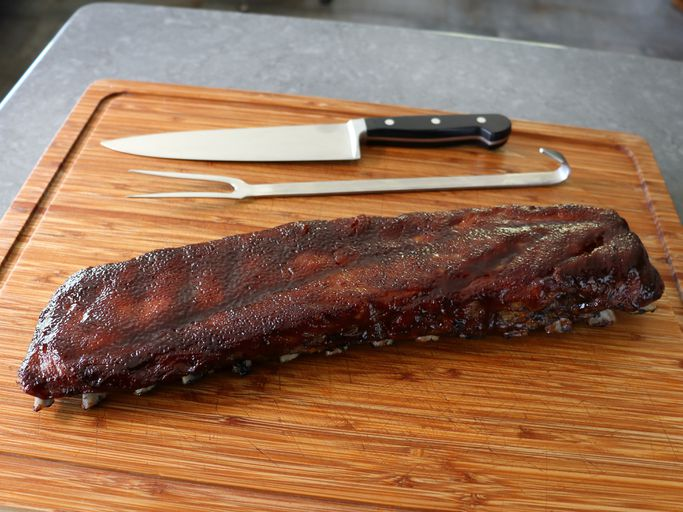

Cherry Cola Ribs

I've come to find out that cherry cola makes an incredibly delicious rack of ribs,
which strangely enough, don't really taste like either cherry or cola,
but taste very similar to your All-American Midwest-style barbecue.
INGREDIENTS
Dry rub:
- 1 tablespoon kosher salt
- 1 teaspoon smoked paprika
- 1/2 teaspoon freshly ground black pepper
- 1/2 teaspoon onion powder
- 1/2 teaspoon garlic powder
Wet Rub:
- 2 tablespoon prepared yellow mustard
- 1 tablespoon apple cider vinegar
- 2 tablespoons cherry cola
Ribs and Sauce:
- 1 (3pound)rack baby ribs, membrane removed
- 1 1/2 cups cherry cola
- 2 tablespoons ketchup
- 1/4 teaspoons ketchup
- 1/4 teaspoon freshly ground black pepper
- salt to taste
STEPS
- Dry rub
- Whisk salt, smoked paprika, onion powder, garlic powder, and 1/2 teaspoon black pepper. Set aside.
- Wet rub
- Whisk mustard, vinegar, and 2 tablespoons cherry cola together in a small bowl. Set aside.
- Process
- Preheat the oven to 250 degrees F (120 degrees C).
- Line a sheet pan with a piece of foil long enough to extend past the rack of ribs by at least 6 inches on both ends.
- Use large size, heavy-duty foil if possible. Place the ribs, meat side up, on the foil.
- Brush wet rub over top and sides, and sprinkle about 60% of dry rub over the surface
- Turn ribs over and, with the bone side up, brush with wet rub, then sprinkle with all the remaining dry rub.
- Center the ribs lengthwise on the foil, and bring up the ends of the foil, like a boat, and crimp so any juices will stay inside.
- Crimp the two long edges together over the top of the ribs.
- The foil doesnt have to be airtight, but the whole rack should be covered.
- Bake in the preheated oven for 2 hours.Remove, open the foil, and pour off juices that have accumulated in the foil into a saucepan.
- Turn the rack meat side up, and brush with wet rub. Enclose again in the foil, and continue to roast at 250 degrees F (120 degrees C) for 1 hour.
- Add any remaining wet rub to the juices in the saucepan, then add the 1 1/2 cups cherry cola, ketchup, and 1/4 teaspoon freshly ground black pepper.
- Bring to a simmer on medium high, cook until liquid is reduced by half.
- Once it is the thickness of barbecue sauce, remove from heat entirely.
- After one hour at 250 degrees F (120 degrees C), remove ribs from the oven, and open out the foil, pressing foil flat to line the pan.
- Turn the oven temperature up to 300 degrees F (150 degrees C).
- Brush ribs with sauce. Return ribs to the oven for 15 minutes. Repeat this process 4 times
- Let ribs rest for about 10 minutes. Slice between each rib with a sharp knife, and serve with extra sauce!!!